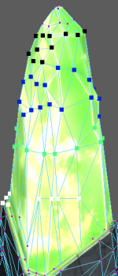

可视化元数据时，如果选择颜色作为可视化方法，则还可以重映射颜色范围。通过此功能，可以控制如何将值表示为颜色。
例如，如果将元数据值 1、2 和 3 应用于模型的三个面，并使用颜色范围 0-1 表示元数据，则所有三个面都显示为白色，这使得区分值变得很困难。但是，如果选择“自定义重映射范围”(Custom remapping range)选项，并将“下限”(Lower range)设置为 1，将“上限”(Upper range)设置为 3，则颜色显示变得更有意义。
通过选择“显示 > 多边形 > 元数据 > 可视化元数据”(Display > Polygons > Metadata > Visualize Metadata) >  打开“元数据可视化选项”(Metadata Visualization Options)窗口，然后从“颜色解释来自”(Color interpretation from)部分中选择选项之一，可以设置这些值。或者，使用 showMetadata -range 标志，可以设置前两个选项和第四个选项。使用 showMetadata -auto 标志，可以设置第三个选项。
打开“元数据可视化选项”(Metadata Visualization Options)窗口，然后从“颜色解释来自”(Color interpretation from)部分中选择选项之一，可以设置这些值。或者，使用 showMetadata -range 标志，可以设置前两个选项和第四个选项。使用 showMetadata -auto 标志，可以设置第三个选项。
，打开“元数据可视化选项”(Metadata Visualization Options)窗口。
从以下四个选项中进行选择：
- “0-1”：0 值将映射到黑色，1 值将映射到白色。所有值都限制在此范围内。此方法对布尔型和浮点型元数据值最有用。
- “0-255”：0 值将映射到黑色，255 值将映射到白色。所有值都限制在此范围内。此方法对整型元数据值最有用。
- “自动重映射数据范围”(Automatically remap data range)：Maya 从当前可视化的流中搜索最小值和最大值，并对所有的数据通道使用同一颜色范围。
例如，如果具有两个数据指定，一个具有值 (0.25, 0.5, 1.75)，而另一个具有值 (0.8, 2.0, 1.1)（如下所示），则最小值设置为 (0.25, 0.25, 0.25)，最大值设置为 (2.0, 2.0, 2.0)。

最小值将解释为黑色，而最大值将解释为白色。换句话说，如果现在将元数据值 (0.25, 0.25, 0.25) 和 (2.0, 2.0, 2.0) 添加到上述流，则它们分别显示为黑色和白色。
所有其他值都相对于新的最小值进行解释。例如，向量 (0.25, 0.5, 1.75) 现在相对于 0.25 到 2.0 的比例进行解释，而不是相对于 0 到 1 的比例。R 和 G 值在 0.25-2 比例的低端，而 B 值在 0.25-2 比例的高端。因此，顶点主要显示为蓝色。
同样，按 0.25-2 比例解释时，向量 (0.8, 2.0, 1.1) 具有主导的 G 值。因此，顶点主要显示为绿色。
- “自定义重映射范围”(Custom remapping range)：根据需要设置范围值。相同的颜色范围用于所有的数据通道。小于最小值的所有值都显示为黑色，大于最大值的所有值都显示为白色。